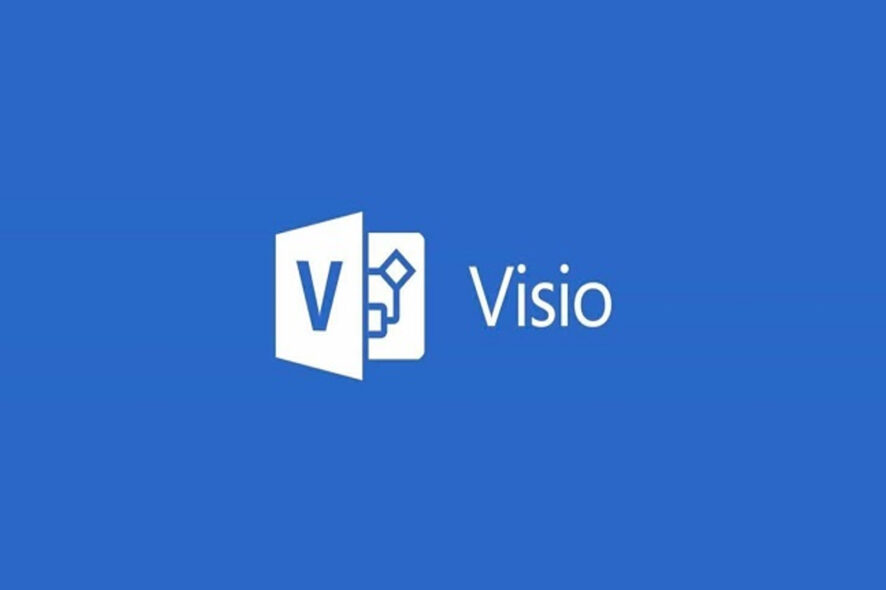

|
 |
Microsoft Visio |
Apresentação
| Microsoft Visio pode ser uma grande solução de diagramação já que permite criar e visualizar facilmente processos de negócios, dados e muito mais em um ambiente Windows. O programa serve para gerar diagramas de diversos tipos, como organogramas, fluxogramas, modelagem de dados (usando UML ou outra notação gráfica qualquer), diagramas de redes, plantas baixas, cartazes, etc. O Visio está disponível há muito tempo como um aplicativo para quem precisava especificamente da diagramação. |
| A Microsoft agora trouxe os principais recursos do Visio para o Microsoft 365.Isso significa que em julho, a empresa lançará uma versão leve do aplicativo web Visio no Microsoft 365 para trazer a diagramação visual e colaboração para todas as equipes— e o melhor? Ele estará disponível, sem custo adicional para quem já é assinante das licenças Microsoft. |
|  | O aplicativo da web Visio no Microsoft 365 tem muitos benefícios. Por exemplo, você pode abrir diagramas do Visio diretamente no Teams e criar imagens para debater ideias com seus colegas durante uma reunião. Você pode criar rapidamente um diagrama profissional e adicioná-lo facilmente como um arquivo JPEG ou PNG em documentos do Word ou apresentações do PowerPoint. |
 | |
|